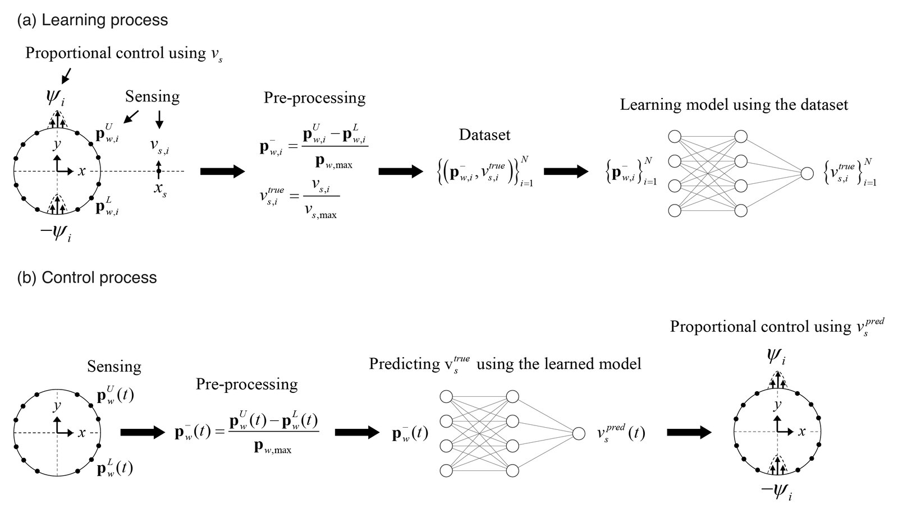
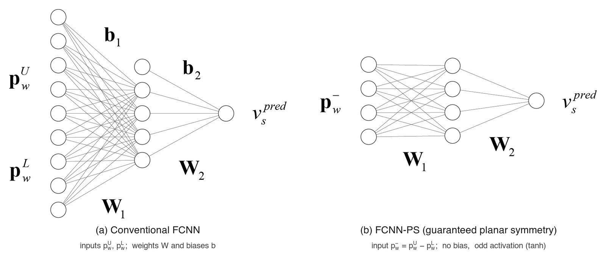
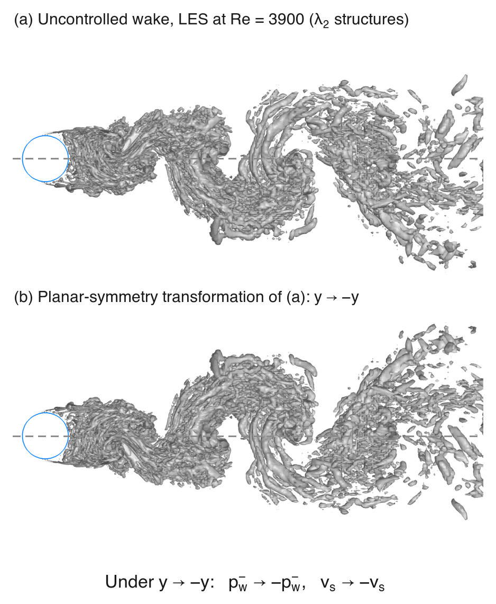
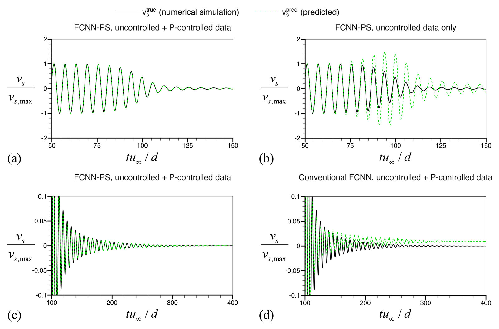
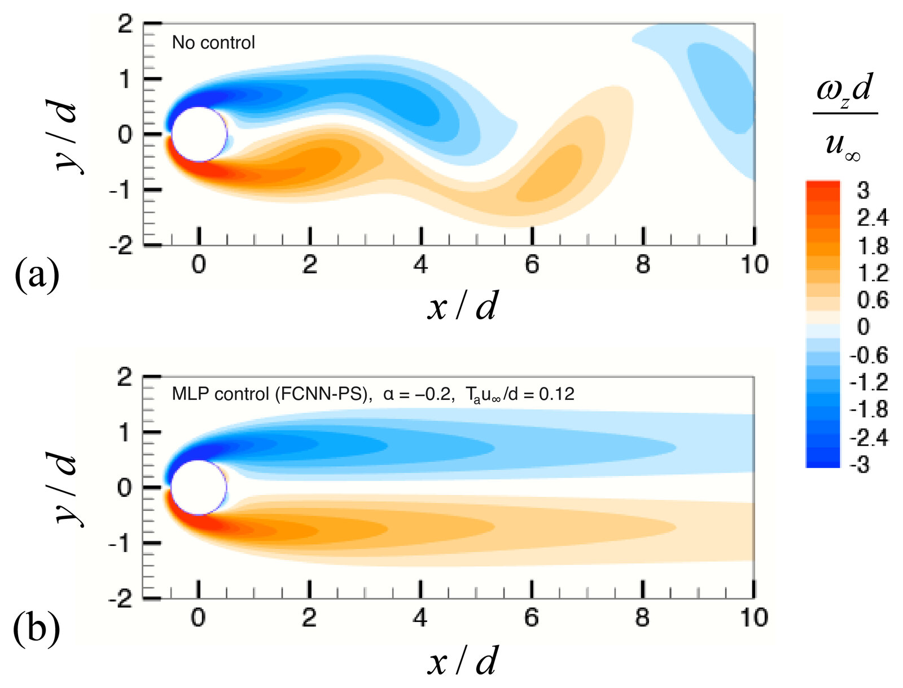
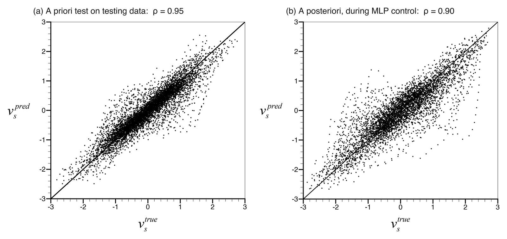
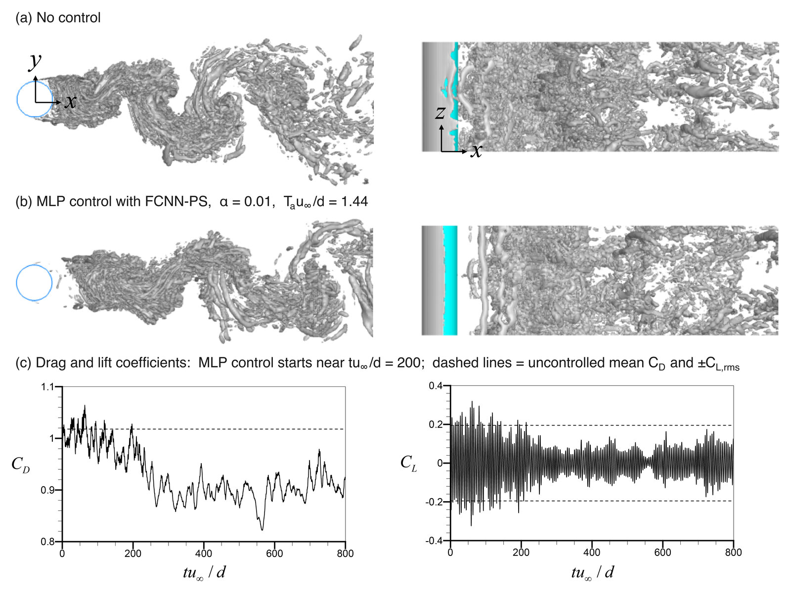

문제 배경
원형 실린더의 비례 제어에서는 순간 유동장 하나로부터 센싱 속도 하나만을 얻는다. 한 유동장에서 다수의 학습 데이터를 얻을 수 있는 난류 채널 유동과 달리, 동일한 규모의 데이터를 확보하는 데 필요한 계산 비용이 크다.
또한 테스트 데이터에 대한 예측 성능이 우수하더라도, 예측값으로 실제 제어를 수행하면 충분한 성능을 얻지 못할 수 있다. Re = 60에서 비제어 유동만으로 학습한 신경망과 일반 FCNN은 모두 제어가 발산하였다.
기존 비례 되먹임 제어(proportional feedback control)는 후류 중심선의 수직 방향(transverse) 센싱 속도를 사용한다. 본 연구는 제어의 실용성을 높이기 위해 실린더 벽 압력으로부터 센싱 속도를 예측하는 인공신경망을 구성하고, 그 예측값을 이용한 기계학습 기반 비례 제어(machine-learning-based proportional control, MLP control)를 수행하였다. 원형 실린더 주위 유동이 중심면에 대해 평면 대칭성(planar symmetry)을 가진다는 점에 착안하여, 바이어스(bias)를 제거하고 모든 층을 odd function으로 구성한 FCNN-PS를 제안하였다.

평면 대칭 변환(y → −y)에 대한 신경망 출력의 대칭성과 폐쇄 루프(closed-loop) 제어 거동을 개념 모델로 나타낸다. 유동과 신경망은 개념적 재현이며, 수치는 논문 결과를 따른다.

유동은 비례 되먹임 제어 페이지와 동일한 개념 모델(Stuart–Landau oscillator)로 나타내었다. 신경망 도식은 임의 가중치로 구성한 구조 예시이며, 제어에 사용한 예측값은 실제 신호에 오차를 부가하여 모사하였다. 수치는 모두 논문 값이다. 출처: 윤진혁, Machine-Learning-Based Proportional Control and Unsteady Distributed Forcing of Turbulent Flow over a Circular Cylinder, 아주대학교 박사학위 논문, 2023, Part III.
사전 검증(a priori test)의 예측 정확도가 높더라도, 예측값을 이용한 제어(a posteriori test)의 성공이 보장되지는 않는다.
원형 실린더의 비례 제어에서는 순간 유동장 하나로부터 센싱 속도 하나만을 얻는다. 한 유동장에서 다수의 학습 데이터를 얻을 수 있는 난류 채널 유동과 달리, 동일한 규모의 데이터를 확보하는 데 필요한 계산 비용이 크다.
또한 테스트 데이터에 대한 예측 성능이 우수하더라도, 예측값으로 실제 제어를 수행하면 충분한 성능을 얻지 못할 수 있다. Re = 60에서 비제어 유동만으로 학습한 신경망과 일반 FCNN은 모두 제어가 발산하였다.
평면 대칭 변환(y → −y)에서 센싱 속도는 −vs, 상·하면 벽 압력의 차는 −p⁻w가 된다. 따라서 신경망 F가 odd function, 즉 F(−x) = −F(x)이면 예측값 역시 동일한 대칭성을 만족한다.





그림: 윤진혁, 아주대학교 박사학위 논문(2023), Part III 및 학위논문 심사 발표 자료.
후류 내 센서 없이 벽 압력 센서와 소규모 신경망만으로 기존 비례 제어와 동일한 성능 범위를 얻었다.
Re = 3900에서 학습 데이터 생성에 사용한 비례 제어는 초기장에 따라 평균 항력을 11.0–11.9%, 양력 섭동을 61.0–67.8% 감소시켰다. MLP control의 결과(11.5%, 67.2%)는 이 범위 내에 있으므로, 기존 비례 제어보다 우수한 결과라기보다 벽 압력만으로 동일한 제어를 재현한 결과로 해석된다.
제어 중 예측 상관계수는 0.90으로 사전 검증 값(0.95)보다 다소 낮다. 이는 난류의 소규모 교란에 대한 예측 성능은 낮으나, 비례 제어에 필요한 센싱 속도의 물리적 특성은 학습되었음을 의미한다. 또한 학습에 사용한 비례 제어를 4회로 줄이거나 스팬 방향 압력 센서를 64개에서 4개로 줄여도 제어 성능이 유지되었다.